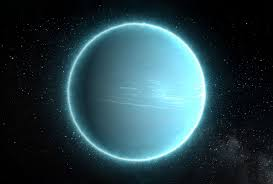

Уран - это седьмая планета от Солнца, ледяной гигант, известный своим уникальным наклоном оси вращения, который составляет 97,8 градусов, из-за чего он вращается, "лежа на боку". Это третья по диаметру и четвертая по массе планета в Солнечной системе, открытая в 1781 году Уильямом Гершелем. Уран имеет систему колец, магнитосферу и 27 спутников.
В контексте урана как химического элемента, он является радиоактивным металлом, используемым в ядерной энергетике и вооружении. Уран токсичен и может представлять опасность для здоровья при воздействии в больших количествах.
